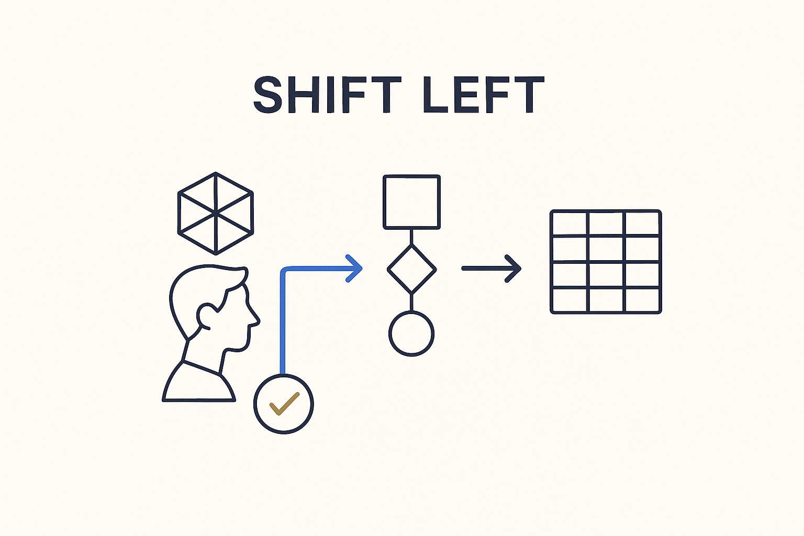

Move the check earlier — validate models, transformations and data against expectations while modeling, not at release time, so problems are caught when they're cheap to fix.

> Move the check earlier — validate models, transformations and data against expectations while modeling, not at release time, so problems are caught when they're cheap to fix.
Shift-left is the discipline of moving the check as early as possible in the flow — quality, validation and schema enforcement pulled back from deployment gates to development and modeling time. The cost of a mistake grows the longer it hides: a misread requirement caught while modeling costs a conversation; the same mistake caught in an acceptance environment costs a release; caught in production it costs trust. So you validate the transformation against the expectation, look at the sample results, and confront the model with reality at the moment of modeling, not weeks later.
It changes what “done” means. Instead of building for weeks and discovering the misunderstandings at the end, you make the discrepancy visible on day one: the stakeholder sees the newly modeled logic and says “that’s not what I meant” while it’s still a five-minute fix. Early detection isn’t a nice-to-have; it is the single biggest lever on the cost and pace of the whole effort.
Shift-left is the principle; the collaborative layer is where it happens, feedback is what flows through it, and a completeness gate is what enforces it automatically. Move the check left, and problems arrive as questions during modeling instead of failures during release.
Where it lives: the delivery layer of Breakthrough Modeling — catch it early, when it’s still cheap.
[Read the article ↗](https://medium.com/@jacovanderlaan/shift-left-in-data-engineering-bringing-quality-and-governance-upstream-d8519dd81353)